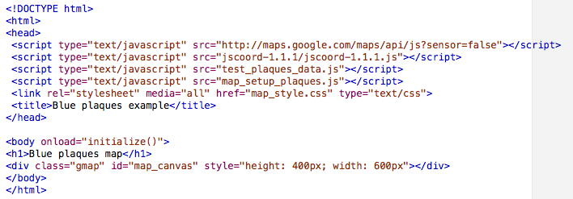
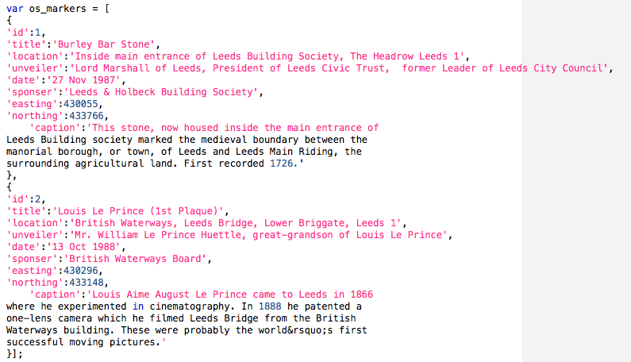
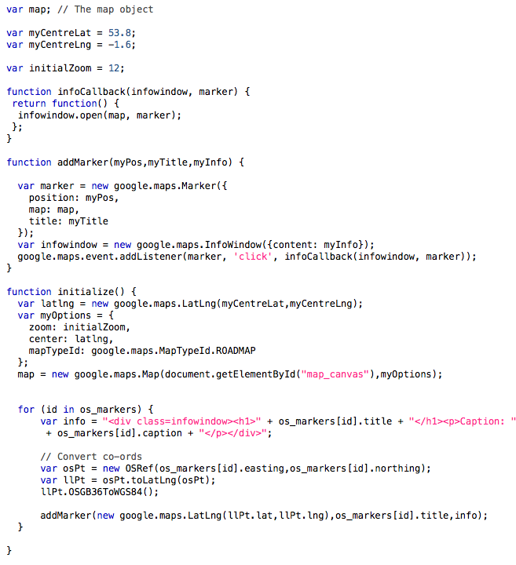
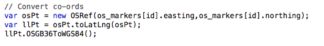

A rather friendlier system is available online, at Nearby.org.uk, which we will now look at in this practical.
This is very useful, as it gives us the lat/long references that we need to use for the Blue Plaques data. You could convert the whole data set this way, recording the lat/long output in your copy of the data set. With a little co-operation with other students, the whole data set could be geocoded fairly quickly. However, this approach (while workable for this practical) would not be sufficient if your data set was considerably larger. Fortunately, there are services which allow automated processing of geocoding and co-ordinate conversion. The nearby.org.uk site includes such as service: it is described here:
http://www.nearby.org.uk/api/convert-help.php
There is also a geocoding service available from Google Maps. The full description of Google's Geocoder is available here:
http://code.google.com/apis/maps/documentation/geocoding/
However, this geocoder does not do what we want for this task, which is to convert from traditional Ordnance Survey grid references to latitude-longitude co-ordinates. Note that geocoding is a resource intensive and relatively slow process. Whilst the Google Maps geocoder could be used directly to determine marker locations given addresses, you would not want to do this each time the map is loaded. In practice, you would have a two-way link with your database, and retain the geocoded location, or use some other way of caching the results.
This can be use to convert from OS National Grid references to the appropriate latitude / longitude reference.

The plaques_map.html file also makes reference to a test data file test_plaques_data.js, which includes the first two points we want to add. This has been put into an array called os_markers, to remind us that the co-ordinates are currently OS grid references.

Finally, we have a new map_setup_plaques.js version of our map_setup code, adapted for this task.

The main change is the addition of these lines to the loop which iterates through the array of marker data:

These lines make use of features of the JScoord library that we have loaded. Firstly, we create a new object of the type OSRef (this object is made available through the JScoord library), and initialise it using the easting and northing values stored in our marker data. We then make use of a method provided by the library for OS points: toLatLng().
This converts the point to a latlng point (the conversion maths is contained within the library). However, not all latitude and longitude references are the same! These coordinates assume that we are still using the OSGB36 datum that is used for normal OS maps. As the OS National Grid uses a different datum to Google Maps, it is necessary to convert between datums.
This is done by the OSGB36ToWGS84() method of the lat-long object. Since we have not specified a new variable, the statement 'llPt.OSGB36ToWGS84();' causes the llPt object to act on itself. Finally, we use the addMarker() to add a marker to our map in the same way as before, except that instead of using the co-ordinates from the original data, we use the lat and lng properties of the object llPt.
Add markers to the map from the blue plaques data. Use whichever method of co-ordinate conversion you prefer (i.e. JSCoord, manual conversion using nearby.org.uk, or direct use of a geocoding or conversion API).
Now you have worked through all the practical documents, you should have no problem in completing the practical requirements.